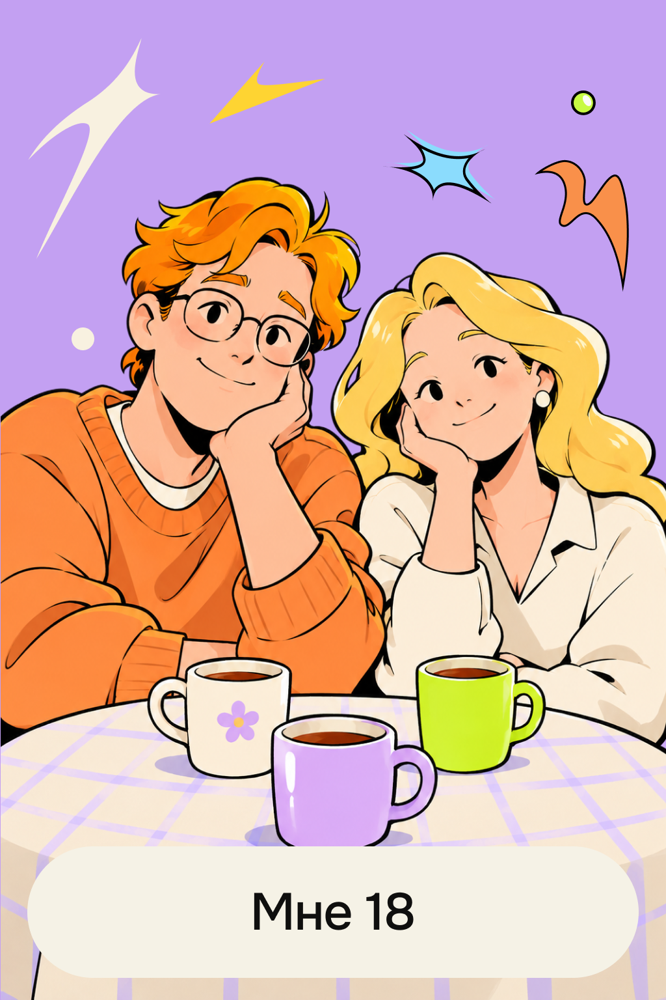

Разговор с родителями
«Пришли результаты экзаменов, у меня хорошие баллы, а уже завтра буду подавать документы в педагогический университет в своём городе. Родители считают, что это прекрасная профессия для женщины: стабильная и подходящая для меня. Вечером за чашкой чая темой разговора вновь был мой выбор. Папа спросил: „Ты хорошо подумала, уверена, что хочешь именно туда?“»